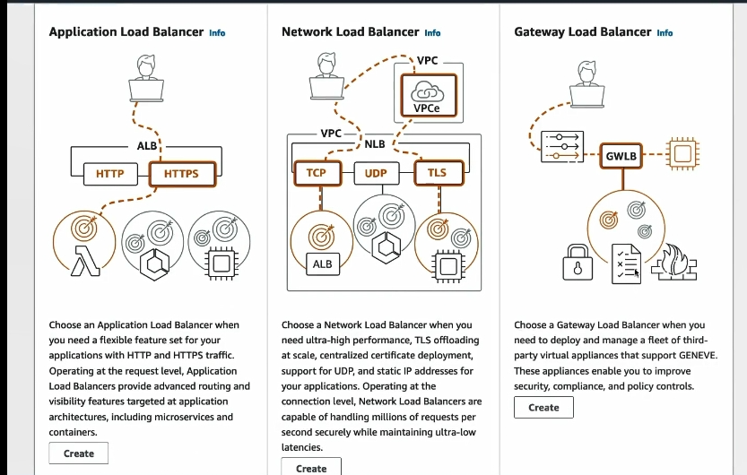

LB type
 AWS cung cấp 3 loại Load Balancer chính: ALB (Application Load Balancer), NLB (Network Load Balancer) và GWLB (Gateway Load Balancer). Mỗi loại load balancer có các tính năng và use case khác nhau. Dưới đây là so sánh chi tiết về công dụng và use case của từng loại.
üöÄ 1. ALB (Application Load Balancer)
Công dụng
- Dựa trên nội dung (Content-based routing): Phân phối lưu lượng dựa vào URL, tiêu đề HTTP và thông tin request.
- Giao thức hỗ trợ: HTTP, HTTPS, WebSocket.
- Dùng để cân bằng tải các ứng dụng web hoặc microservices.
- Hỗ trợ tính năng như SSL termination, path-based routing, host-based routing, sticky sessions.
Use Case
| Use Case | Giải thích |
|---|---|
| Web applications | Dùng để phân phối lưu lượng các ứng dụng web thông qua các URL hoặc routing logic. |
| Microservices architecture | Khi các dịch vụ cần được điều hướng một cách linh hoạt theo URL hoặc các điều kiện logic. |
| API gateway | Dùng để load balancing cho API gateway giữa client và server. |
| SSL termination | Dùng ALB để xử lý SSL và giảm tải SSL cho các máy chủ backend. |
| Host-based routing | Route request đến server khác nhau dựa trên subdomain hoặc host header. |
⚙️ 2. NLB (Network Load Balancer)
Công dụng
- Dựa trên thông tin IP và Port (Layer 4): Phân phối lưu lượng TCP, UDP ở tầng giao thức mạng.
- Dùng để cân bằng tải với độ trễ thấp và lưu lượng lớn.
- Giao thức hỗ trợ: TCP, UDP và gRPC.
Use Case
| Use Case | Giải thích |
|---|---|
| Real-time gaming | Đáp ứng nhanh với độ trễ cực thấp trong các game trực tuyến. |
| TCP/UDP traffic | Khi bạn cần cân bằng lưu lượng TCP hoặc UDP, không cần đến logic nội dung HTTP. |
| IoT applications | Phân phối lưu lượng IoT yêu cầu độ trễ thấp và không cần xử lý HTTP. |
| Financial transactions | Xử lý thông tin trong các giao dịch tài chính thời gian thực. |
| VPNs or Direct Routing | Giữ kết nối ổn định và đảm bảo thông tin IP không bị thay đổi. |
üîó 3. GWLB (Gateway Load Balancer)
Công dụng
- Dùng để cân bằng tải cho các appliances bảo mật như firewalls, IDS/IPS hoặc các thiết bị kiểm tra lưu lượng mạng.
- Là loại load balancer chuyên dụng, phù hợp với các thiết bị hoặc dịch vụ bảo mật trong lưu lượng hybrid hoặc multi-cloud.
- Giao thức hỗ trợ: TCP, UDP.
Use Case
| Use Case | Giải thích |
|---|---|
| Bảo mật mạng | GWLB thường được dùng để cân bằng lưu lượng qua các thiết bị firewall, IDS/IPS. |
| Hybrid cloud security | Kết nối và kiểm soát lưu lượng trong multi-cloud (AWS, on-premises hoặc datacenter). |
| Inspect traffic | Được sử dụng để đảm bảo lưu lượng được giám sát và lọc bởi các firewall hoặc appliance. |
| Zero Trust Architecture (ZTA) | Dùng để xác thực và lọc lưu lượng qua các thiết bị bảo mật. |
| Secure VPC-to-VPC routing | Tạo các tunnel an toàn giữa các VPC hoặc trung tâm dữ liệu. |
üìä So sánh nhanh ba loại Load Balancer
| Tiêu chí | ALB (Application LB) | NLB (Network LB) | GWLB (Gateway LB) |
|---|---|---|---|
| Lớp hoạt động (OSI) | Lớp 7 (Application Layer) | Lớp 4 (Transport Layer) | Lớp 4 (Transport Layer) |
| Giao thức hỗ trợ | HTTP, HTTPS, WebSocket | TCP, UDP, gRPC | TCP, UDP |
| Routing logic | Dựa vào nội dung (URL, header, path) | Dựa vào IP và port | Dựa vào appliance rules |
| SSL termination | ✅ (Hỗ trợ) | ❌ | ❌ |
| Use case chính | Web apps, Microservices, API Gateway | Real-time apps, gaming, IoT | Bảo mật, IDS/IPS, Secure cloud |
| Tính năng bảo mật | SSL termination và WAF | AWS Shield và Security Group | Bảo mật thông qua firewall appliances |
| Độ trễ | Trung bình đến cao (vì xử lý Layer 7) | Thấp (vì xử lý trực tiếp IP/port) | Phụ thuộc vào appliance processing |
| Kết hợp với firewall | Gián tiếp thông qua các tính năng SSL | Không | ✅ (tích hợp trực tiếp với firewall appliance) |
üåü T√≥m t·∫Øt khi n√†o d√πng loại n√†o
| Nhu cầu | Sử dụng ALB | Sử dụng NLB | Sử dụng GWLB |
|---|---|---|---|
| Dịch vụ web hoặc API (HTTP/HTTPS) | ✅ | ❌ | ❌ |
| Dịch vụ có yêu cầu real-time latency (IoT, game) | ❌ | ✅ | ❌ |
| Bảo mật và kiểm tra lưu lượng với firewall | ❌ | ❌ | ✅ |
| Kết nối hybrid hoặc multi-cloud | ❌ | ❌ | ✅ |
| Cần cân bằng với TCP, UDP traffic | ❌ | ✅ | ✅ |
Hy v·ªçng qua b√†i viết so sánh tr√™n, bạn s·∫Ω hi·ªÉu r√µ h∆°n v·ªÅ c√¥ng d·ª•ng v√† use case c·ªßa ALB, NLB v√† GWLB, v√† t·ª´ ƒë√≥ l·ª±a ch·ªçn ph√π h·ª£p theo nhu c·∫ßu h·ªá th·ªëng c·ªßa m√¨nh! üòä